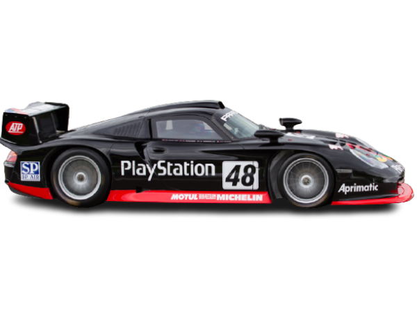

MODEL
Porsche 911 GT1-98
YEAR
1998
ENGINE
3.2 L Watercooled Twin-Turbo Flat-6
POWER
542 bhp @ 7200 rpm
TORQUE
465 ft lbs @ 5000 rpm
WEIGHT
~950 kg
CHASSIS
Carbon-fiber Monocoque
Porsche 911 GT1-98
The Carbon-Fiber Le Mans Conqueror
Class: FIA GT1 Category (Le Mans Prototype)
The Porsche 911 GT1-98 represents a radical evolution of the 1996 and 1997 GT1 variants. Built specifically to conquer the strict regulations of the FIA GT1 category, this car was Porsche Motorsport's first masterpiece to completely abandon the traditional steel chassis structure, shifting entirely to an ultra-lightweight and exceptionally rigid carbon-fiber monocoque.
"The 911 GT1-98 combined pure aerodynamic aggression with bulletproof reliability. It was a true masterpiece of endurance engineering."
Powered by the legendary 3.2-liter water-cooled twin-turbocharged flat-6 engine, the powerhouse was heavily optimized according to Le Mans air-restrictor mandates to unlock maximum mechanical endurance. Its aerodynamic framework was re-engineered significantly lower and wrapped in extreme sweeping curves to channel airflow as efficiently as possible over its massive rear wing.
Race Results
Overall Victory at the 1998 24 Hours of Le Mans
The most historic breakthrough for the 911 GT1-98 unfolded at the world's most prestigious endurance race, the 1998 24 Hours of Le Mans. Going wheel-to-wheel against brutal factory competition from heavyweights like the Toyota GT-One, Mercedes-Benz CLK GTR, and Nissan R390, Porsche relied on calculated tactical consistency and absolute mechanical durability.
The #26 race car, masterfully driven by the iconic trio of Allan McNish, Stéphane Ortelli, and Laurent Aïello, crossed the finish line to secure the absolute 1st place overall podium (Overall Winner), closely flanked by the sister #27 GT1-98 car in second place. This spectacular 1-2 finish beautifully marked the celebration of Porsche's 50th anniversary right on the tarmac of the legendary Circuit de la Sarthe.
Gallery